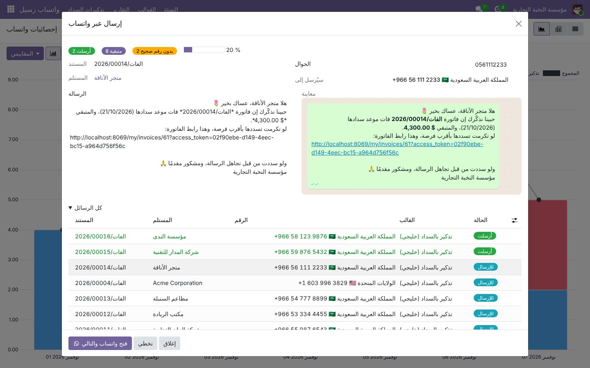
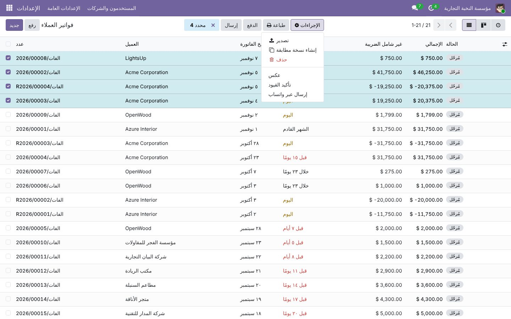
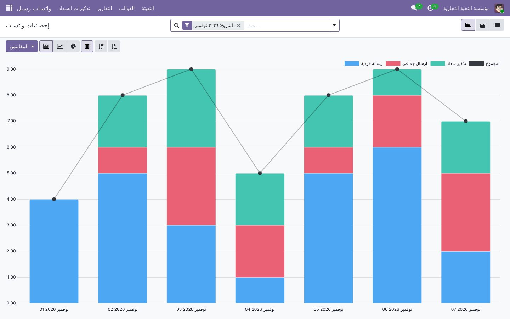
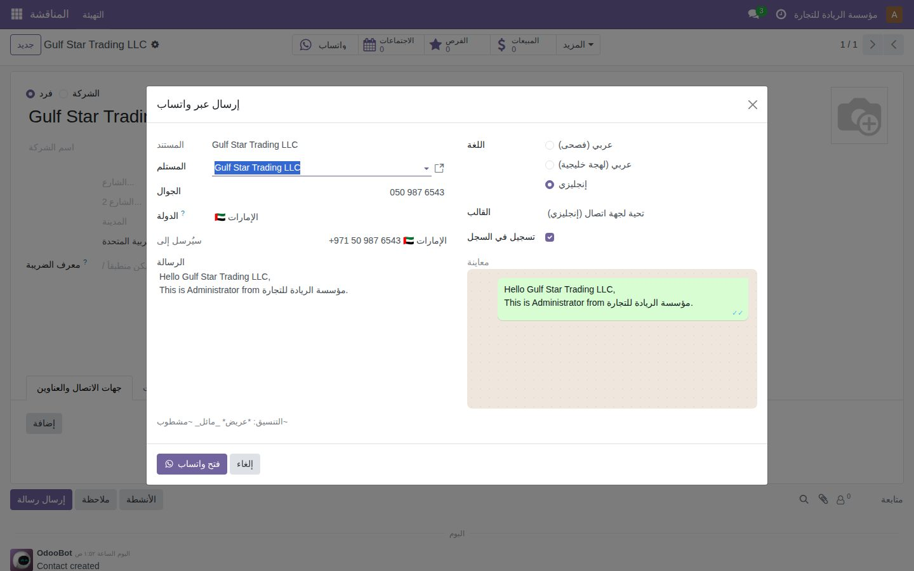
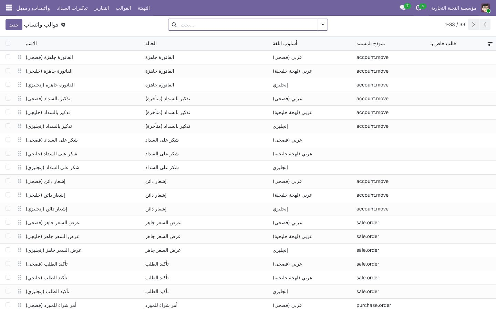
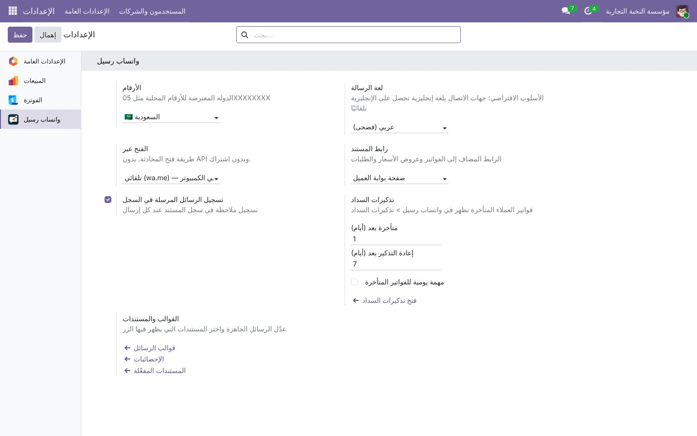

واتساب رسيل | Raseel WhatsApp
زر واتساب في كل مستند، إرسال جماعي، تذكير تلقائي بالمتأخرات، قوالبك الخاصة وتقارير كاملة — مجانًا للأبد، بدون API وبدون اشتراك
WhatsApp button on every document, guided bulk sending, overdue payment reminders, personal templates and statistics — free forever, no API, no subscription
100% Free
Odoo 17 · 18 · 19
Community & Enterprise
Odoo.sh ready
240+ countries
No Meta API
لماذا واتساب رسيل؟
تطبيق واتساب الرسمي في أودو متاح في نسخة Enterprise فقط، ويتطلب حساب Meta Business ورسومًا على كل محادثة.
واتساب رسيل يعمل على Community وEnterprise معًا، مع أرقام كل دول العالم: يفهم الرقم كما يكتبه موظفك، ويجهّز رسالة عربية مهذبة،
ويفتح المحادثة مباشرة من رقم شركتك المعتاد — لمستند واحد أو لعشرات العملاء في دفعة واحدة.
الجديد في هذا الإصدار · What's new
⇉ إرسال جماعي موجَّه
حدّد عدة فواتير أو عروض أسعار أو عملاء من أي قائمة ← الإجراءات ← إرسال عبر واتساب. تُجهَّز رسالة لكل مستند مسبقًا، ثم تفتح المحادثات واحدة تلو الأخرى بزر «فتح واتساب والتالي» مع عدّاد وتقدّم ومعاينة، ويمكنك تعديل أي رسالة أو تخطيها.
Select records in any list view → Actions → Send by WhatsApp. Messages are prepared in advance and opened one after the other with a single button — no automated spam, so your number stays safe.
⏰ تذكير تلقائي بالمتأخرات
قائمة تذكيرات السداد تعرض كل فاتورة عميل متأخرة لم يُرسل لها تذكير مؤخرًا، جاهزة برسالة تذكير بالسداد. تحدد بعد كم يوم تُعتبر متأخرة، ومتى يُعاد التذكير، ويمكن إنشاء مهمة يومية تلقائية لمندوب المبيعات المسؤول.
Payment Reminders lists overdue customer invoices not reminded recently. Configurable delay and re-remind interval, optional daily To-Do for the salesperson.
✎ قوالبك الخاصة
كل موظف يكتب قوالبه بأسلوبه من قائمة قوالبي أو بخيار «حفظ كقالب خاص» أثناء الإرسال. القوالب الخاصة لا يراها غيره وتُختار أولًا عندما تناسب المستند، والمدير يدير القوالب المشتركة للجميع.
Personal templates per user (created from the menu or with "Save as my template" while sending), picked first when they match; administrators manage the shared ones.
▤ تقارير وإحصائيات الرسائل
كل رسالة تُسجَّل: من أرسلها، لمن، لأي مستند، بأي لغة، ومن أين (فردي، جماعي، تذكير). تقارير رسوم بيانية وجدول محوري وقائمة مع فلاتر وتجميع حسب الموظف والعميل ونوع المستند واليوم والشهر.
Every message is logged: graph, pivot and list reports per salesperson, customer, document type, source, day and month.
الأساسيات · Core features
🌍 تنسيق أرقام كل الدول تلقائيًا
05XXXXXXXX، +966 05…، 00971…، الأرقام الهندية ٠٥٥…، المسافات والشرطات — كلها تتحول تلقائيًا للصيغة الدولية الصحيحة، لأكثر من ٢٤٠ دولة ومنطقة.
Auto-formats numbers for 240+ countries and territories, Arabic-Indic digits included.
💬 ٣٣ رسالة جاهزة بثلاثة أساليب
فصحى رسمية، لهجة خليجية ودّية، وإنجليزي: فاتورتك جاهزة، تذكير سداد، شكر بعد السداد، عرض سعر، تأكيد طلب، أمر شراء للمورد، الشحنة في الطريق… وكلها قابلة للتعديل.
Ready, editable messages in formal Arabic, Gulf dialect and English.
🧠 يختار الرسالة المناسبة
الفاتورة المتأخرة تحصل على تذكير سداد، والمسددة على رسالة شكر، وعرض السعر على رسالة العرض، والعميل الذي لغته إنجليزية يحصل على الإنجليزي تلقائيًا.
Overdue invoice → reminder, paid → thank-you, English contact → English.
🔗 رابط الفاتورة أو PDF مرفق
يضيف رابط بوابة العميل (مع رمز وصول آمن) أو رابط تحميل PDF مباشر، ليشاهد العميل المستند ويسدده أو يعتمده دون تسجيل دخول.
Secure customer-portal link or direct PDF link, added automatically.
🆓 مجاني للأبد فعلًا
لا يستخدم WhatsApp Business API ولا أي خدمة خارجية. يفتح واتساب (التطبيق أو الويب) برسالة جاهزة، وتضغط إرسال من رقمك المعتاد. لا اشتراك، ولا رسوم على الرسائل، ولا بيانات تخرج من نظامك.
No API, no Meta account, no per-message fee, no data leaves your Odoo.
🧩 يعمل مع أي مستند
الفواتير، عروض الأسعار وأوامر البيع، أوامر الشراء، التسليمات، جهات الاتصال، العملاء المحتملون — ويمكنك تفعيله لأي نموذج آخر حتى المخصص، من الإعدادات بدون برمجة. وكل رسالة تُسجَّل في سجل المستند.
Invoices, quotations, orders, POs, deliveries, contacts, CRM — or any model you enable. Logged in the chatter.
تذكيرات السداد بالإرسال الموجَّه · Guided payment reminders
Overdue invoices prepared in one queue: counters, progress, editable message, WhatsApp-like preview, then one click per chat

«إرسال عبر واتساب» من قائمة أي مستند
Select records in a list view → Actions → Send by WhatsApp

إحصائيات الرسائل · Statistics
Messages per day and source (single, bulk, reminders) — also as pivot table and list

الزر داخل الفاتورة · The button on the invoice

فاتورة متأخرة ← تذكير سداد بالفصحى تلقائيًا
Overdue invoice → formal Arabic payment reminder, number fixed from Arabic digits, preview as WhatsApp will show it

عرض سعر باللهجة الخليجية مع رابط الاعتماد
Quotation in Gulf dialect with online signature link

عميل إماراتي: الرقم المحلي 050… يتحول إلى +971 والرسالة بالإنجليزي
UAE contact: local 050… becomes +971, English message picked from the contact language

القوالب المشتركة والخاصة · Shared & personal templates

إعدادات بسيطة · Simple settings

مقارنة · Comparison
| Feature | Raseel WhatsApp | Odoo WhatsApp (Enterprise) | Most popular free connector |
|---|
| Price | Free forever | Enterprise + Meta fees per conversation | Free |
| Works on Community | ✔ | ✘ | ✔ |
| Meta Business account / API | Not needed | Required | Not needed |
| Bulk sending from list views | ✔ guided queue | ✔ (paid templates) | ✘ |
| Overdue payment reminders | ✔ menu + daily To-Do | Write your own automation | ✘ |
| Personal templates per user | ✔ | ✘ | ✘ |
| Statistics (graph / pivot) | ✔ | ✔ | ✘ |
| Auto-format for 240+ countries (local, 00, +, Arabic digits) | ✔ | Needs a country on the contact | ✘ number must already include the country code |
| Arabic messages (formal + Gulf dialect) | ✔ 33 ready | Write them & wait for Meta approval | Generic templates |
| Smart template (overdue / paid / quotation…) | ✔ | ✘ | ✘ |
| Any model, incl. custom | ✔ from settings | ✔ | Sales & invoices |
| Extra dependencies | Only Discuss (mail) | — | Sales + Invoicing + Website |
طريقة الاستخدام
- ثبّت الإضافة (تعتمد على «المناقشة» فقط). يظهر تطبيق واتساب رسيل في القائمة الرئيسية.
- رسالة واحدة: افتح أي فاتورة أو عرض سعر أو جهة اتصال واضغط زر واتساب (أو Shift+W)، راجع الرقم والرسالة ثم فتح واتساب.
- عدة رسائل: حدّد السجلات في القائمة ← الإجراءات ← إرسال عبر واتساب ← تجهيز الرسائل ← فتح واتساب والتالي.
- المتأخرات: واتساب رسيل ← تذكيرات السداد.
- الإعدادات ← واتساب رسيل: الدولة الافتراضية، لغة الرسائل، نوع الرابط، أيام التأخير، إعادة التذكير، والمستندات المفعّلة.
Placeholders: {partner} {company} {doc} {amount} {residual} {due_date} {date} {link} {user} — or Arabic: {العميل} {الشركة} {المستند} {المبلغ} {المتبقي} {الاستحقاق} {التاريخ} {الرابط} {الموظف}. WhatsApp formatting *bold* _italic_ ~strike~ supported.
Made in Makkah Al-Mukarramah by Wahat Raseel Trading Company (واحة رسيل) · LGPL-3 · Source: github.com/wahatraseel/odoo-raseel-whatsapp
WhatsApp is a trademark of WhatsApp LLC. This module is not affiliated with or endorsed by WhatsApp or Meta; it simply opens the public click-to-chat link (wa.me).